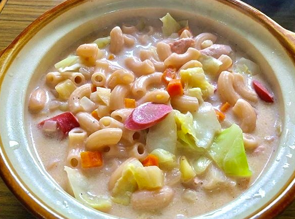

Chicken Sopas

Ingredients
- 2 pounds bone-in chicken parts
- 1 onion, peeled and quartered
- 1 teaspoon peppercorns
- 4 cloves garlic, peeled and crushed
- 2 bay leaves
- salt and pepper to taste
- 10 cups water
- 1 tablespoon canola oil
- 4 hot dogs, sliced diagonally into 1/2-inch thick
- 1 onion, peeled and chopped
- 2 stalks celery, cubed
- 2 large carrots, peeled and cubed
- 2 cups uncooked elbow macaroni pasta
- 1 can (12 ounces) evaporated milk
- salt and pepper to taste
- 1/2 small napa cabbage, chopped
- 4 hard-boiled eggs, peeled and halved
- green onions, chopped
Instructions
- In a large pot, combine chicken, quartered onions, peppercorns, garlic, bay leaves, 1 tablespoon of salt, and 10 cups water.
- Over medium heat, bring to a boil, skimming scum that may float on top. Once the broth clears, lower heat and cover. Continue to cook for about 20 to 30 minutes or until chicken is cooked through and fork-tender. With a slotted spoon, remove chicken from the broth.
- Allow chicken to cool to touch, pull meat from the bones, shred and set aside.
- Return the bones to the pot and bring to a boil. Lower heat, cover, and simmer for at least 30 minutes to 1 hour. Using a fine-mesh sieve, strain Using a fine mesh sieve, strain broth to remove sediments and reserve about 8 cups.
- In another pot over medium heat, heat oil. Add hot dogs and cook, stirring regularly, for about 1 to 2 minutes or until lightly browned. With a slotted spoon, remove from pan and drain on paper towels. Keep warm.
- Add the chopped onions, celery, and carrots to the pan. Cook, stirring regularly, for about 3 to 5 minutes or until softened
- Add macaroni and cook, stirring regularly, for about 1 to 2 minutes.
- Add the reserved broth and bring to a boil.
- Lower heat and simmer, stirring occasionally, for about 8 to 10 minutes or until pasta is tender.
- Add evaporated milk, shredded chicken, and hot dogs. Continue to cook simmer until heated through. Season with salt and pepper to taste.
- Add napa cabbage and cook for about 1 minute or until tender-crisp.
- To serve, ladle soup in individual bowls and garnish with eggs and green onions, if desired. Serve hot.